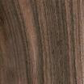
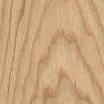
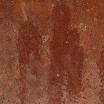
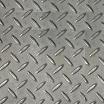
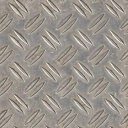
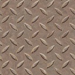

Textura vy�aduje pamì� pro ètvecovı rastr o stranì velikosti mocniny dvojky. Tedy pro texturu velikosti obecného obdélníka musíme poèítat se minimálním ètvercem o stranì velikosti 2N, kterı pojme danı obdélník.
| Náhled | Název | Rozmìry (px2) | Potøebné místo (px2) | Poèet kanálù | Potøebná texturovací pamì� |
|---|---|---|---|---|---|
| Autodrom | |||||
|
texture1.jpg | 90x90 | 128x128 | 3 | 49152 B = 48 kB |
|
texture2.jpg | 100x100 | 128x128 | 3 | 49152 B = 48 kB |
| Celkem pou�ito: | 98304 B = 96 kB | ||||
| Horská dráha | |||||
|  | palisandr_indicky.jpg | 104x104 | 128x128 | 3 | 49152 B = 48 kB |
|  | dub_cerveny.jpg | 104x104 | 128x128 | 3 | 49152 B = 48 kB |
|  | iron.jpg | 200x200 | 256x256 | 3 | 196608 B = 192 kB |
|  | iron_floor.jpg | 170x170 | 256x256 | 3 | 196608 B =192 kB |
| Celkem pou�ito: | 491520 B =480 kB | ||||
| Labu�ovı kolotoè | |||||
|  | tex-kov1.jpg | 450x450 | 512x512 | 3 | 786432 B = 768 kB |
|  | tex-kov2.jpg | 450x450 | 512x512 | 3 | 786432 B = 768 kB |
| Celkem pou�ito: | 1572864 B = 1536 kB | ||||
| Celkové mno�ství pou�ité texturovací pamìti: | 2162688 B = 2112 kB | ||||